Examples#
This gallery walks through every public feature of
chemistrykit.electrochem: the Nernst equation for standard and
concentration cells (with activity-coefficient corrections), a curated
standard-reduction-potential table with redox-couple balancing,
Butler-Volmer electrode kinetics and Tafel-plot linearization, Faraday’s
laws of electrolysis and the galvanic-vs-electrolytic distinction, a
simplified constant-current battery discharge model with Peukert’s-law
rate dependence, fuel-cell thermodynamics, Kohlrausch’s conductivity
laws, and diffusion-limited electroanalytical currents.
Each script in this gallery is self-contained and can be run directly
with python examples/electrochem/<section>/<script>.py. Every script
also carries an RST module docstring as its title/description and uses
# %% markers to split narrative text from code, which is exactly what
Sphinx-Gallery renders into the pages below – the script is the source
of truth for what you see, not a copy of it.
Sections#
nernst – the Nernst equation for standard cells and concentration cells, plus Debye-Huckel activity-coefficient-corrected reaction quotients.
standard_potentials – the curated standard-reduction-potential table, redox-couple electron balancing, and cell-potential combination.
butler_volmer – Butler-Volmer electrode kinetics and its high-overpotential Tafel-plot linearization, checked for convergence.
electrolysis – Faraday’s laws of electrolysis, and galvanic vs. electrolytic cell operation.
battery – Volta’s pile, a simplified constant-current battery discharge model, and Peukert’s-law capacity-vs-rate dependence.
fuel_cell – Grove’s hydrogen-oxygen gas battery and its thermodynamic voltage and efficiency limits.
conductivity – Kohlrausch’s laws of electrolytic conductivity.
voltammetry – the Cottrell equation, polarography and the Ilkovič equation, and the Randles-Ševčík peak current.
Battery discharge#
Volta’s pile of series-stacked two-metal cells, a simplified constant-current battery discharge model and Peukert’s-law capacity-vs-rate dependence.
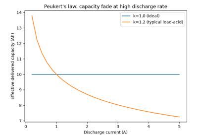
Peukert’s law: battery capacity falls at high discharge rates
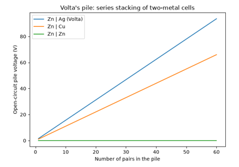
Volta’s pile: stacking zinc-silver cells in series
Butler-Volmer kinetics#
Butler-Volmer electrode kinetics and its high-overpotential Tafel-plot linearization.
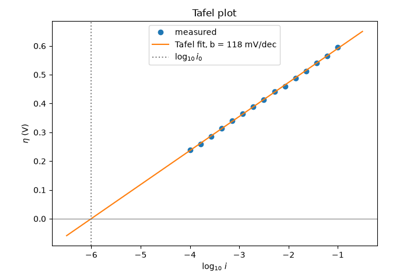
Tafel’s law: overpotential linear in log current
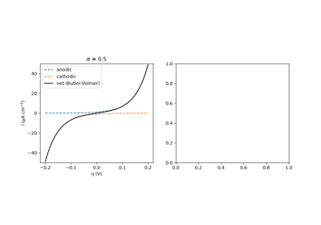
The Butler-Volmer equation: anodic and cathodic partial currents
Electrolytic conductivity#
Kohlrausch’s law of independent migration of ions and his square-root law for molar conductivity.
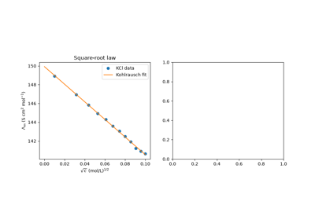
Kohlrausch’s laws: independent migration and the square-root law
Electrolysis#
Faraday’s laws of electrolysis, Nicholson and Carlisle’s electrolysis of water, and Davy’s electrolytic isolation of the alkali metals.
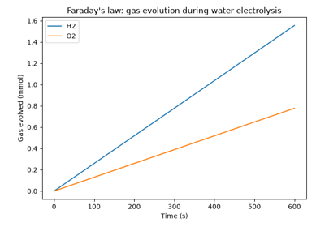
Nicholson and Carlisle’s electrolysis of water
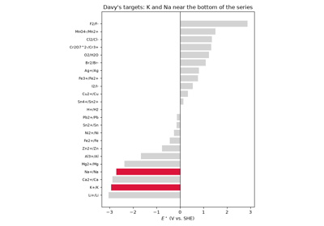
Davy’s electrolytic isolation of potassium and sodium
Fuel cells#
Grove’s gas battery and the thermodynamic voltage and efficiency limits of the hydrogen-oxygen fuel cell.
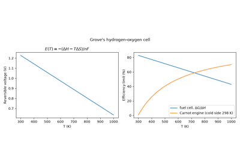
Grove’s gas battery: the hydrogen-oxygen fuel cell
The Nernst equation#
Standard and concentration cells via the Nernst equation, and Debye-Huckel activity-coefficient-corrected reaction quotients.
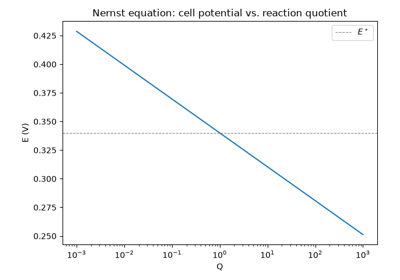
The Nernst equation: cell potential versus concentration
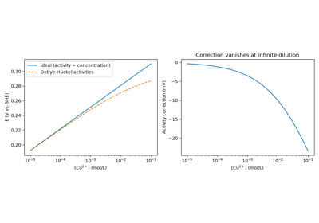
Debye-Hückel activity corrections to the Nernst equation
Standard reduction potentials#
The Daniell cell from tabulated standard reduction potentials, and the 1953 Stockholm sign convention behind the table.
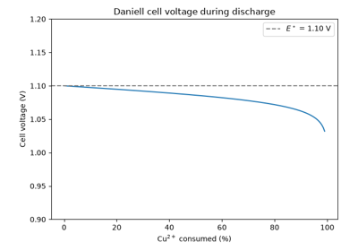
The Daniell cell: a steady 1.10 V from zinc and copper
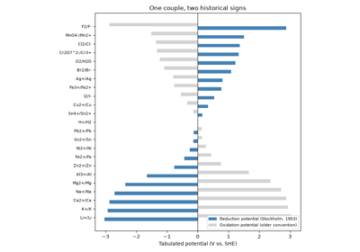
The 1953 Stockholm convention: electrode potentials are reduction potentials
Electroanalytical currents#
Diffusion-limited currents: the Cottrell equation, Heyrovský’s polarography and the Ilkovič equation, and the Randles-Ševčík peak current of cyclic voltammetry.
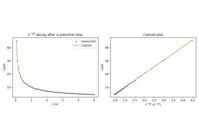
The Cottrell equation: current decay after a potential step
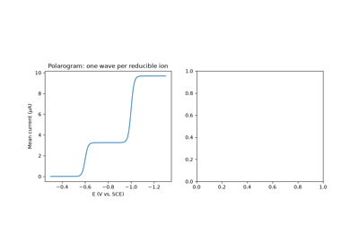
Heyrovský’s polarography and the Ilkovič equation
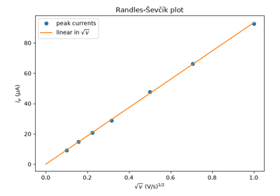
The Randles-Ševčík equation: peak current in cyclic voltammetry